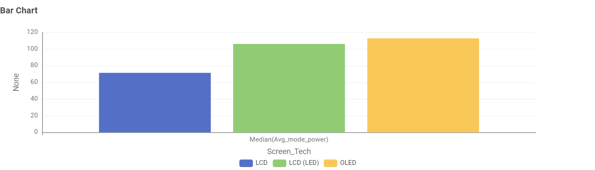
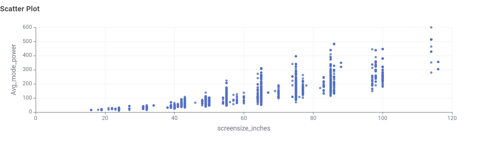
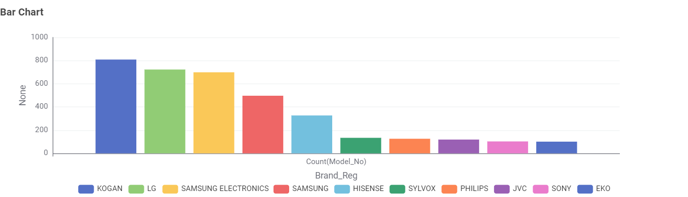

Television Energy Consumption Story
A data-driven investigation into power efficiency across the Australian television market.
1. Display Technology: Which Screen Uses the Most Power?
When it comes to electricity consumption, display technology is the deciding factor. In the chart below, bar height represents median power draw in Watts (taller = more electricity consumed):
- Standard LCD (Lowest Power): Consumes the least energy (median ~70W), but picture quality is basic and fewer models exist.
- LCD (LED) (Balanced): Draws ~107W median. Although it uses more power than standard LCD, it makes up over 85% of store shelves because it offers the best balance of brightness, price, and efficiency.
- OLED (Highest Power): Draws the highest median power (~114W)—about 60% more power than standard LCD—because every individual organic pixel produces its own light.

Figure 1: Median on-mode power consumption (Watts) by display technology.
2. The "Size Penalty": Exponential Growth in Energy Use
Consumers often desire larger displays for living room entertainment. However, plotting screen dimensions against on-mode wattage reveals a distinct non-linear (exponential) increase in energy demand:
- Compact screens under 50 inches (e.g., 32" to 43") typically draw between 30W and 50W.
- Mid-sized family displays (55" to 65") cluster around 80W to 150W.
- Large format screens (75" to 85"+) can consume between 200W and 450W+, effectively quadrupling electricity costs compared to a compact model.

Figure 2: Scatter plot showing screen size (inches) vs. on-mode average power (Watts) across the Australian market.
3. Market Leaders: Brand Distribution
A handful of major manufacturers provide the vast majority of televisions available in Australia. Kogan, LG, and Samsung lead the market in catalogue diversity, offering consumers options across both entry-level eco-ranges and high-draw flagship tiers.

Figure 3: Top 10 TV brands in Australia ranked by total number of active certified models.
Buyer's Summary: Practical Consumer Guidance
The Efficiency Sweet Spot
A 55-inch to 65-inch LCD (LED) television delivers an immersive viewing experience while staying below the steep exponential power penalties seen on 75"+ screens.
Benchmark 5.5+ Stars
Always verify the Energy Rating label. Choosing a model with 5.5 stars or higher can save up to $250 in electricity costs over seven years of typical usage.
Switch Off Retail Presets
Factory "Vivid" picture presets maximize panel backlighting and power draw. Selecting "Standard" or "Cinema Eco" mode can immediately reduce energy consumption by 20–30%.